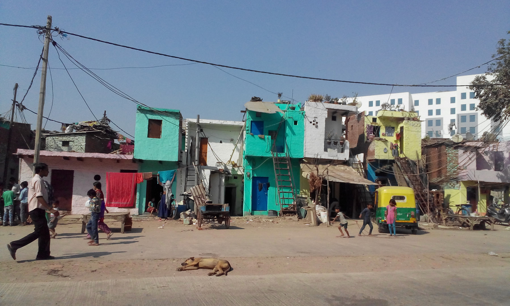
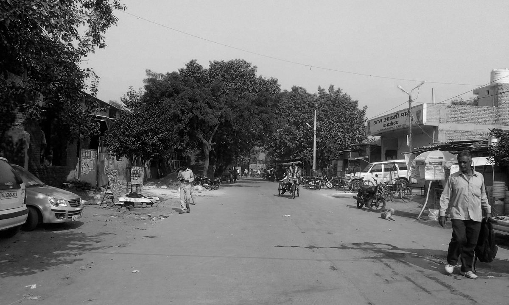
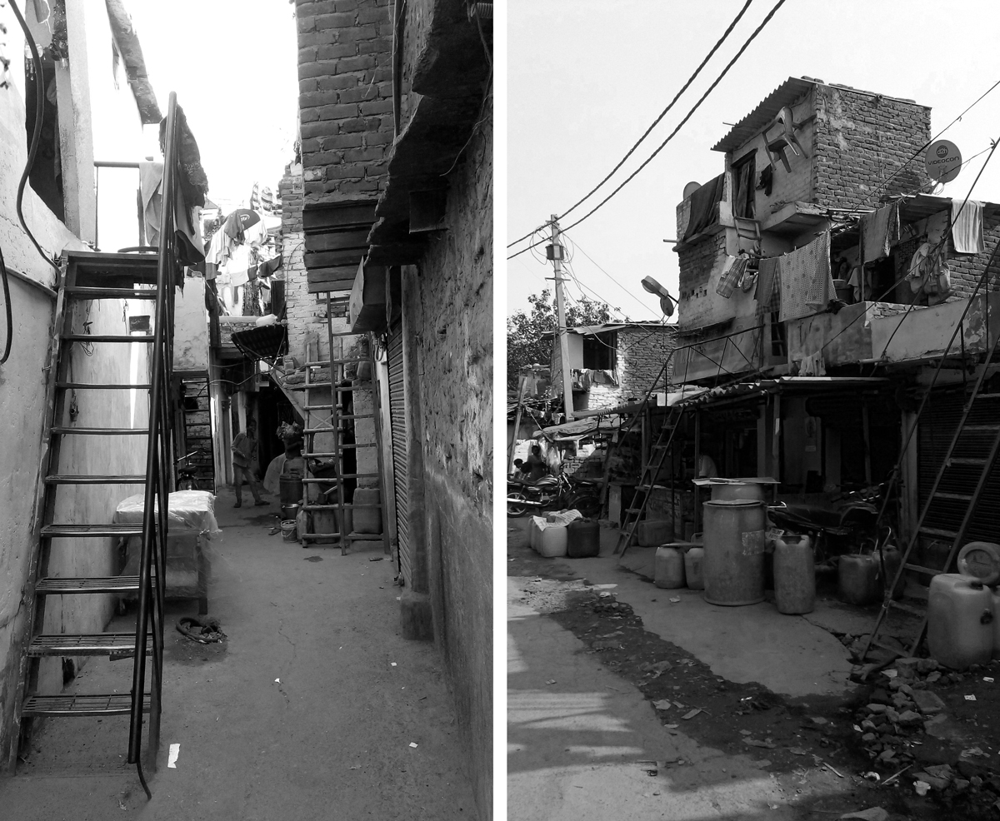
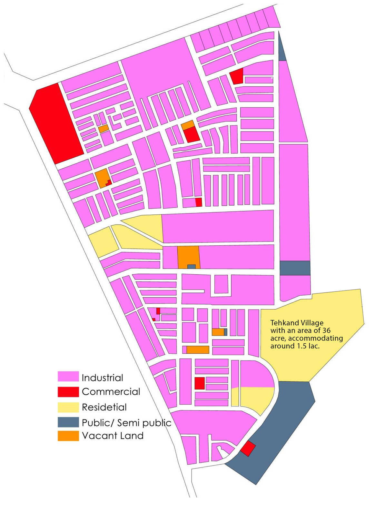
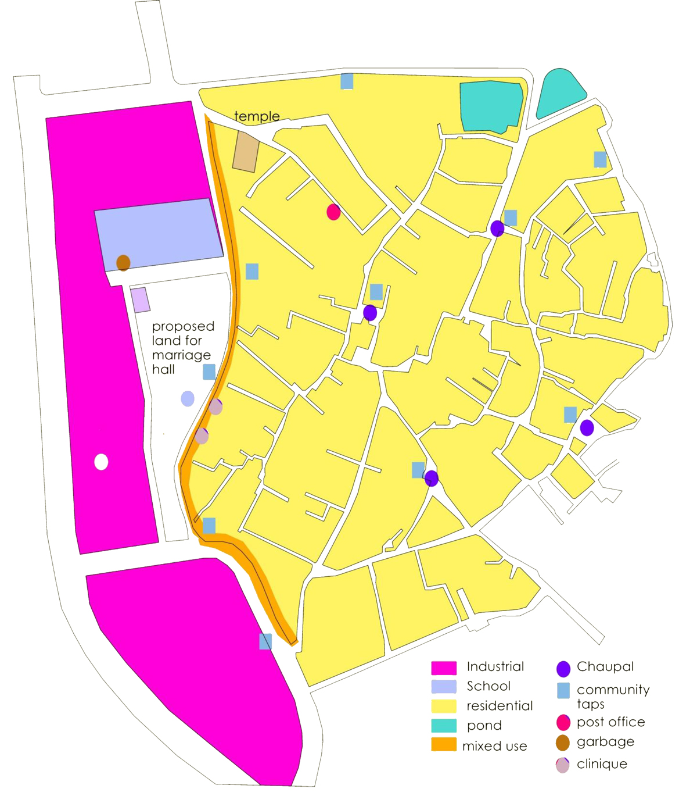

Abstract
Industrial areas are the areas which have played an important role in the shaping up of city since independence. In 1950-60’s, during the planning stages of a region, industrial areas were given strategic locations. Usually seen as a separate entity and not an integral part of the area, industrial areas were designed for the industrial activities and ignored the residential settlements that mushroomed along with it or the already existing settlements. However the residents of these settlements are the main source of work force for the industrial setups. They are dependent on the industrial area and form an integral part of the area, but, they are the ones being ignored. Availability of work, bring more people forming squatter settlements or leading to over population of the already existing areas. Negligence in planning, no infrastructure facilities, no policy controls, environmental situations, etc., generate slum like conditions in these areas, decreasing the Quality of Life of residents. Thus this paper aims to discuss the importance of industrially dependent residential areas and its solitude state publicized by the policy makes.
The prosperity of the industries depends upon the efficiency of the labor that gives the end result for the institutions and the efficiency of the workforce is directly proportional to the condition of the settlement. As per the analysis of industrial institutions, it is inferred that, an informal settlement mushrooms in the vicinity. Due to the unaffordability of travelling costs and to remain in the proximity of working place, people squat in the available chunks of land, and gradually gets transformed into conditions like “slum”. The settlement around the Okhla industrial area of Phase I is of no difference, the slums like condition of Indira Vikas Vihar and Tehkand village are the best suitable example for the analysis of industrial settlement. Restricted by the railway lines in the east and the north south side of the area by the well set up industrial institutions, an inorganic growth of settlement started towards the west direction, which was later restricted due to the high end residential and industrial plots in pocket D, resulting confined growth of the premises into nucleated haphazard augmentation. They were forced to live in a ghetto like situation. The class ii and iii category labor from settlements like Tehkand and Indira Vikas Vihar, form the main source of work force for the institutions in industrial setup.
 Symmetrical facade in an asymmetrical habitat (One side of village).Human system is the collective indicator of social, economic and institutional structures and processes. Related to industry, society and settlement, these systems are very diverse and dynamic which are expressed at the individual level through livelihoods and livelihoods define or just it could be said that it draws an outline for the area. The irony with these settlements is that in spite of being as the power house their own houses are forced into the dark. Settlement, as we all know, is a dwelling place of an individual where he/she lives in an interaction with the other individuals of same strata. Settlement pattern is the shape or form of the settlement located in an area however the pattern for industrial area varied; it may be dispersed, linear or nucleated. And in case of Okhla industrial area the pattern is nucleated, it revolves around a small chaupal situated in the center of the premises.The area is well served by the single approaching road of 8 meter wide road which is used for the movement of heavy trucks and rest of the roads area hardly visible inside the settlement as right of way diminishes up to just 600 meter. The area is spread into 36 acres of land with population around 48000 (registered voter) however the real population exceeds up to lacs as the maximum population are migrated from the neighboring state. The housing typologies also changes with the time as the population is of labor class and mostly migrated one, so the rented typology of one room set is in upfront. For the ventilation in the habitable space, the only opening for the circulation of air is the “entrance”. Quality of housing conditions are very bleak as we move inside the nucleus, however the road side facing structures having mixed use development are rather in good condition. When it was asked about the people perception on their housing condition, their response was very astonishing 84% of them are quite satisfied with the current living condition as because they can’t afford to live in other areas of Delhi.
 Collector road of the industrial area dividing village from industrialized spaces.  LHS - typical alley of the village.Now analyzing the quality of life in these settlements is very fiddly thing. The various aspects such as quality of housing condition, proximity to the health facilities, provision of educational facilities, quality of living condition, provision of public facilities and utilities, the interactive social spaces, public safety and security, etc. have been analyzed.
 Layout of Okhla Industrial Area phase I  Base map of Tehkand village.Quality is a perceived entity rather than a reality by itself. In other words, a quality does not exist without an individual evaluating it and cannot be commoditized by itself. It is an intangible manifestation of either an intangible or a tangible entity and exists almost always attached to an entity that both defines and anchor such quality. Thus quality is not even a single phenomenon based on the entity that defines its presence.
Enhancing quality of life has been a topic of debate in the 21st century. Many governmental policies are there to tackle it but unfortunately any policies which drafted in accordance with it are very hard to implement. We need a very hard programme to enhance the quality of life physically and spiritually. Physical development affect the social condition so it must be taken into account, thus every part must mutually understand their roles and responsibilities towards the community and locate where the problem is. If we talk about the physical term for this area, there is no single community space, no proper sanitation management; in fact the physical aspect of this particular area is very austere. Since the physical setting is in bleak condition it effect in the social structure of the space also. The only positive thing that has been noticed in this inorganic haphazard development is the sense of neighborhood. In contrast to the other developed planned settlements where interaction with the people is not considered an important aspect, this area has very strong sense of bonding with each other. The lack of open single community space doses not stops them from bonding with each other. With the ongoing urbanization process and to keep pace with that, everyone is running here and there keeping his eyes closed on the repercussion he is going to encounter in his life. Within the day to day busy life, everyone is in quest of happiness and that ends in the shadow of latest technologies available around. Everyone is connected to the thousands of friends on social networking sites but they don’t have time to get socialize with their neighbors. So the power house of the Okhla industrial area, if not paid attention by the local governments and the enthusiastic participation by the communities, it will be no longer in condition to provide the energy to the industrial setups and ultimately the outcome will be effected which hamper the overall growth of the community and the nation because nothing could be done in isolation everything is dependent with each other. We have to carefully analyze the interdependency of each and every aspect of society to develop as a whole not a single entity.
Written by Zeeshan Ibrar. Photographs by Vidya Anil.
Zeeshan Ibrar is an Architect from Delhi. He completed his post-graduate specialization in Urban Regeneration from Jamia Millia Islamia, Delhi in 2015